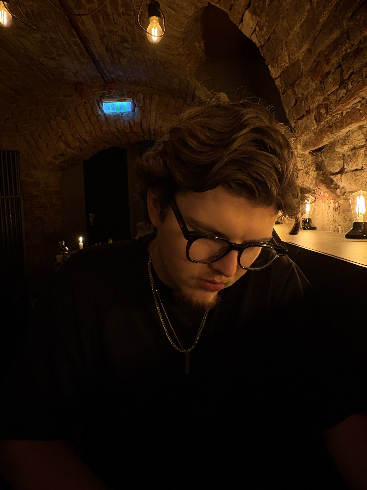
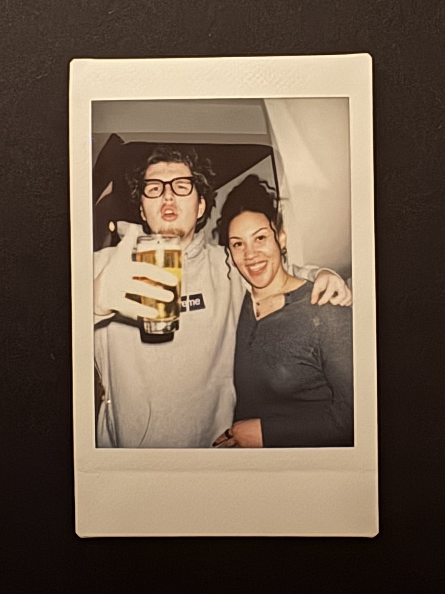

Hey, I'm Finn, an economics student in Würzburg with a thing for aesthetics, whether it's fashion, music, art or interior design.
Travel's a big part of that. I've been lucky enough to see many places, and every trip teaches me something new about people and culture, and how different the world can look just a few flight hours away.
Most of my ideas come from stuff I've actually experienced myself, though sometimes they come from other people too. I'm curious, open, and genuinely love connecting with people, ideally over a beer or at a café.
Long-term, I want to work in marketing for a company that's built around aesthetics, or really any place where style isn't just an afterthought. Combining my studies with what I'm actually into is the goal, and honestly the only way I work well and stay happy doing it. Outside of that, I'm all about food in every form, from a proper restaurant dinner to a 2am kebap with friends. "You learn a lot about someone when you share a meal together." — Anthony Bourdain.
So if you're interested in restaurant recommendations, or just want to work with me, just click below.
contact/socials